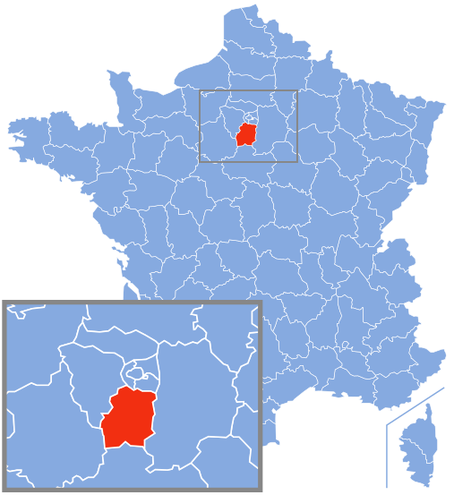
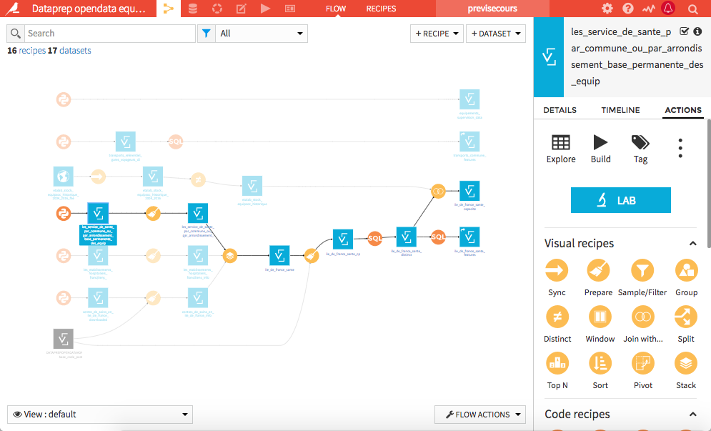
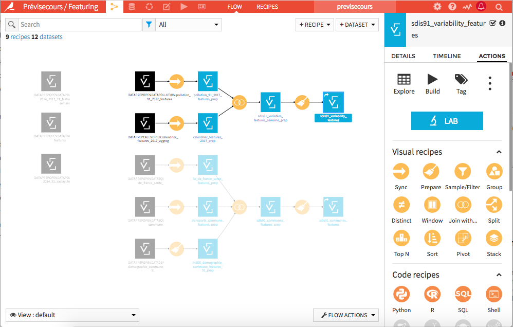
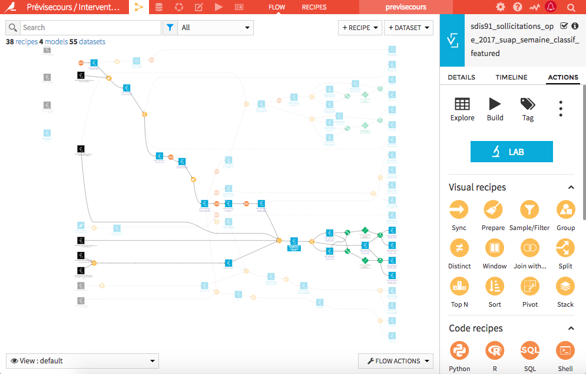
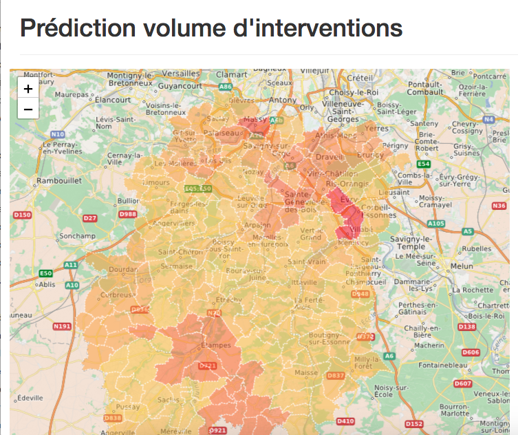
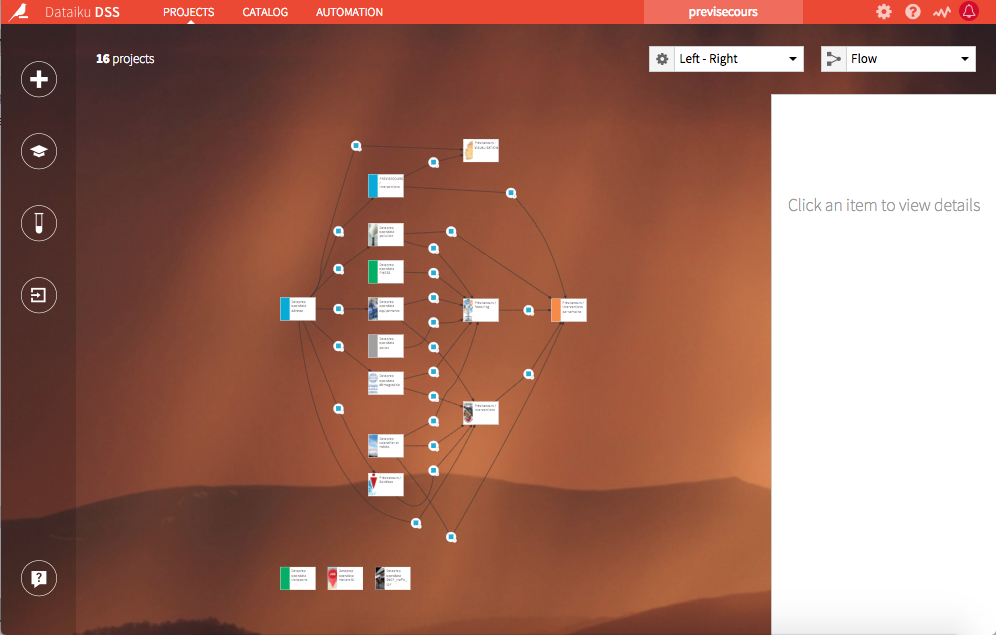

### Entrepreneurs d'Intérêt Général #### Défi Prévisecours <img width="550" style="background-color:white;border:0px;box-shadow:0" data-src="img/eig_previsecours.svg" alt="EIG logo"> <a href="https://previsecours.fr" style="font-size: 32px">previsecours.fr</a> <p style="font-size: 28px">Guillaume Lancrenon, Tiphaine Phe-Neau, <br> Daniel Ansellem, Fabien Antoine et Fabrice Barret</p> <img width="280" style="background-color:white;border:0px;box-shadow:0" data-src="img/etalab_mi_logos.svg" alt="Etalab Ministère de l'Intérieur"><img width="80" style="background-color:white;border:0px;box-shadow:0" data-src="img/sdis91_logo.jpg" alt="SDIS 91">
## Défi Prévisecours (EIG #2) Aider les sapeurs-pompiers à intervenir plus efficacement avec des modèles prédictifs - Modèle sur les volumes d’interventions et leurs géolocalisations pour anticiper les moyens à mobiliser - Projet en partenariat avec les <a href="http://www.sdis-91.fr" target="_blank">sapeurs-pompiers de l’Essonne</a> (SDIS 91)
#### Où se trouve l'Essonne ? 
## Défi Prévisecours / EIG #2 - 10 mois - 2 profils - Full Stack Developer / Guillaume Lancrenon - Data Scientist / Tiphaine Phe-Neau - <a href="https://www.etalab.gouv.fr" target="_blank">Etalab</a> et <a href="https://www.interieur.gouv.fr/" target="_blank">Ministère de l'Intérieur</a> / MGMSIC - Plus de <a target="_blank" href="http://dai.ly/x6fp47d">détails sur la 2e promotion EIG en vidéo!</a>
## <iframe frameborder="0" width="800" height="448" src="http://www.dailymotion.com/embed/video/x6fp47d" allowfullscreen allow="autoplay"></iframe>
#### C'est sympa tout ça mais... ## Est ce possible? ### en 10 mois <p> <span style="float:left" class="fragment"> - 2 personnes<br> - Partir de rien<br> </span> <span style="float:left" class="fragment"> - Récupérer des données administratives et ouvertes <br> </span> <span style="float:left" class="fragment"> - Flux de normalisation et pérennisation<br> </span> <span style="float:left" class="fragment"> - Sortir un produit utile et utilisable </span> </p>
<br> <br> <br> <br> <br> <br> <br> <br> <br> <br> <p style="color:white;font-size:50px"><b>EST-CE POSSIBLE?</b></p>
## Prévisecours... <br>le début !
### 0. Discussions métiers <img width="700" data-src="img/pompiers.jpg" alt="Metiers"> - Comprendre l'utilisation actuelle des données - Ateliers "intuition" sur le SUAP
### 1. Données interventions <img width="600" data-src="img/interventions.png" alt="Screen interventions"> - Vérification et analyse - Aggrégation - Anonymisation
### 2. Récupération open data  - INSEE population, ménages, scolarisation, IDH2 - Pollens, pollution, transports - Calendrier, météo
### 3. Feature engineering / variables  - Création de features après discussions métiers - Jointures avec les données interventions
## Alors, <br> au bout d'un mois <br>a-t-on quelque chose ?
### 4. Machine learning : modèles v0  - Model farming - ROC AUC: 0.918 sans tweaking
### 5. POC visualisation 
### 5. POC visualisation #### Interventions par commune <iframe id="freshwidget-frame" src="https://algo.previsecours.fr/dip/api/webapps/view?projectKey=PRVISECOURSVISUALISATION&webAppId=kwi1cbb&apiKey=nJxRZkRr0NK7sBS3gOSBKIVipz8Q5G6W" scrolling="auto" allowtransparency="true" style="height: 500px; width: 100%;" frameborder="0"> </div></iframe>
### 5. POC visualisation #### Evolution des interventions par commune <iframe id="freshwidget-frame" src="https://algo.previsecours.fr/dip/api/webapps/view?projectKey=PRVISECOURSVISUALISATION&webAppId=W0kS5vF&apiKey=932QkDr6PUcppTtKPUfoDWlOM8BHhSz6" scrolling="auto" allowtransparency="true" style="height: 500px; width: 100%;" frameborder="0"> </div></iframe>
### Workflow actuel  - Division en brique pour une meilleure ré-utilisation des données ouvertes par d'autres projet - Division par maille d'aggrégation temporelle
## Timeline au bout de <br>1 mois <p> <span style="float:left" class="fragment"> 1. Données métiers - 1 semaine </span> <span style="float:left" class="fragment"> 2. Open data - 1 semaine pour la base + en cours </span> <span style="float:left" class="fragment"> 3. Feature engineering sur la base - 1 semaine </span> <span style="float:left" class="fragment"> 4. Model farming - 1 semaine en // </span> <span style="float:left" class="fragment"> 5. POC visualisation - 1 semaine en // </span> </p>
## Prévisecours... <br>La suite? <a target="_blank" href="https://previsecours.fr">previsecours.fr</a><br> <a target="_blank" href="https://twitter.com/datatiph">@datatiph</a>
<br> <br> <br> <br> <br> <br> <br> <br> <br> <br> <p style="color:white;font-size:50px"><b> TEAM PREVISECOURS / EIG #2</b></p>
<br> <br> <br> <br> <br> <br> <br> <br> <br> <p style="color:white;font-size:50px"><b>EN ATTENDANT, ON CONTINUE DE TRAVAILLER...</b></p>